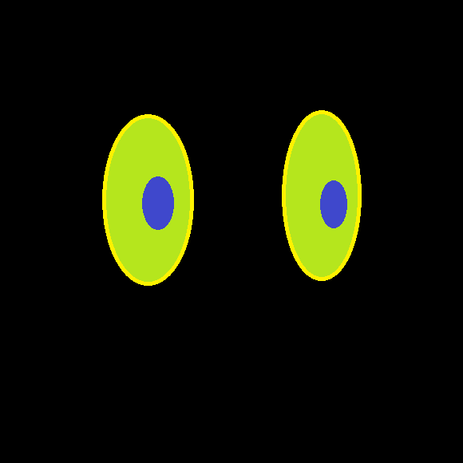

HugoBot is a multipurpose discord Bot
This bot has the following functionalities
- Random name, number, color generator
- Various image filters(shoegaze filters, negative of image, etc.)
- NASA API that returns MARS Rover and earth images based on suitable arguments
- Last fm API to track music, top artists compare with other server members
- Teleport API to get city's standard of living index
- COVID API for COVID-19 stats
- Other apis for quotes(anime quotes, daily advices, etc.)
- Genius API for song lyrics
- It also has a study-tracking feature (not yet developed fully)
I am planning to deploy an API for my shoegaze filter, the distortion algorithm for which was written by me